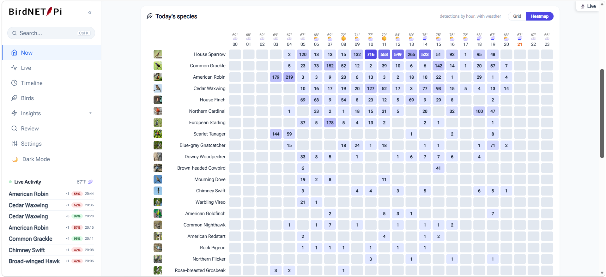
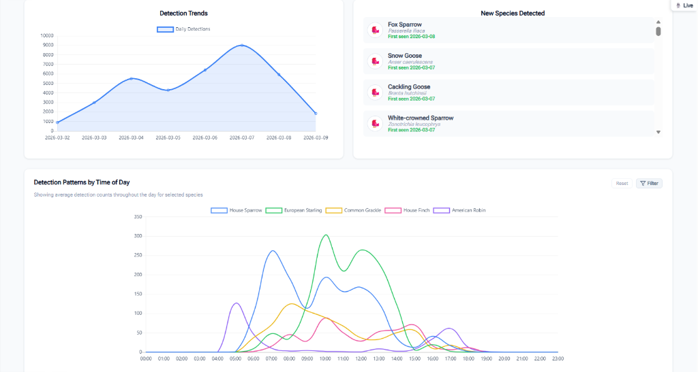
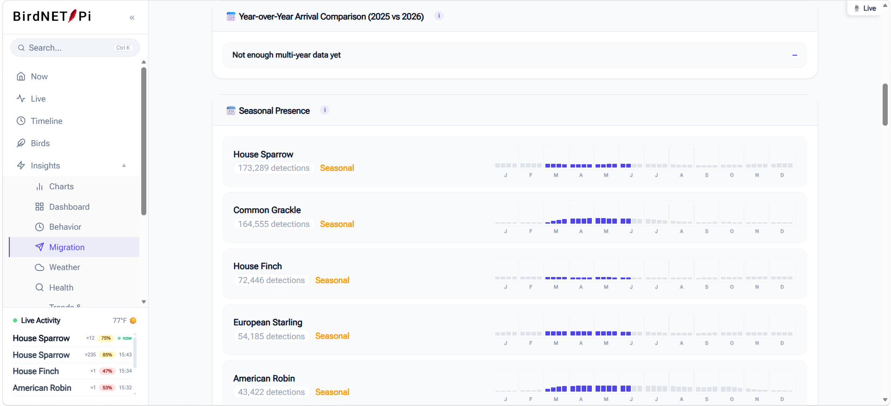
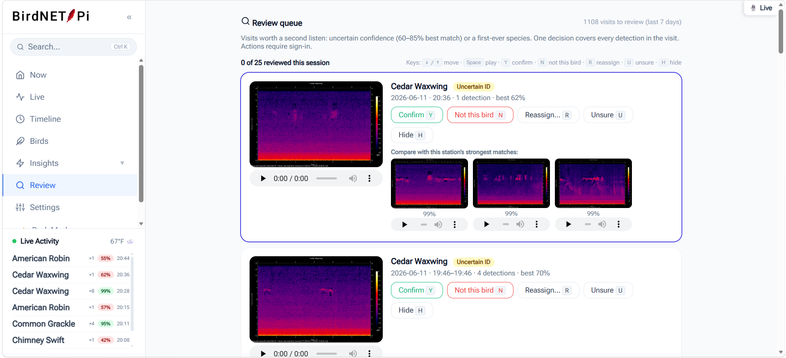
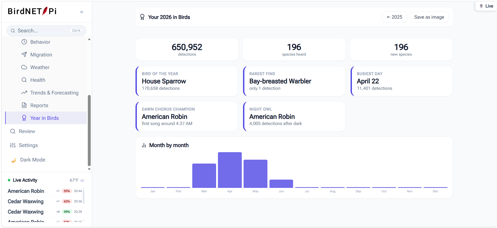

Features
Analytics and insights, not just a detection log
Every BirdNET-Pi records which bird was heard and when. The Enhanced Version is built around what you can learn from thousands of those records once they accumulate.
The Today dashboard
The home screen answers "what's happening in the yard right now." It leads with the most recent bird — photo, confidence, how long ago, how many times it's visited this week — then a short Today's Story that only speaks when something is actually unusual: a new species, a bird returning after weeks away, a regular that's suddenly gone quiet, or a day that's notably busier or quieter than your own two-week average.
Below that, each species detected today gets a card with a 24-hour activity chart and the weather along the bottom axis.

Interactive analytics
The charts are real Chart.js instances — hover for exact values, click legend entries to toggle series, and they resize properly on a phone. The set covers:
- Top species — horizontal ranking of your most frequent visitors
- Detections by time of day — aggregate hourly activity across your history
- Detection trends — daily volume over time
- Species detection trends — stacked comparison between species you pick
- Species diversity over time — unique species per day
- Detection patterns by time of day — overlaid hourly curves for selected species

Behavioral insights
The Insights section reads your own database and states conclusions in plain English. It's deliberately quiet when there's nothing notable to say, so when it does speak it's worth reading.
Dawn chorus & nocturnal activity
Calculates which species participate in your local dawn chorus and when it starts, identifies genuinely nocturnal detections, and plots the earliest and latest active windows for each bird.
Migration & seasonality
Flags new arrivals — species heard for the first time in a fortnight — notes which regulars have gone quiet, and charts seasonal presence against expected frequencies.
Yard health score
A composite of detection volume, stability, and rarity that gives you one number to watch over time, plus lifetime milestones as you pass them.
Rare visitors
Separates two kinds of rare: species you've barely recorded, and species the location model says shouldn't be here at this time of year at all.

Review queue
BirdNET reports a confidence score, and scores in the middle of the range are genuinely uncertain. The review queue collects those, groups them into visits rather than individual detections, and gives you comparison clips of the same species from elsewhere in your history so you can judge by ear.
Triage is keyboard-driven, and your verdicts propagate: detections you mark as false positives are excluded from species counts, insights, and eBird exports, so a misidentified bird doesn't quietly pollute your statistics forever.

Timeline day replay
Pick any date and see the whole day at once: species as horizontal lanes, visits as blocks along a 24-hour axis, weather across the top. Click any block to hear that clip. It's the fastest way to understand the shape of a day — the dawn surge, the midday lull, the evening return.

Species pages and galleries
Every species gets its own page: a calendar heatmap of when you've heard it, its best recordings, detection history, and notes you can write yourself. Thumbnails are fetched with multi-source fallbacks and session caching, at high resolution, so the galleries actually look like galleries.
You can favorite species, mute ones you don't want notifications for, and crown a favorite recording — crowned clips are protected from the automatic disk cleanup.
Live audio and spectrogram
A live stream with a real-time scrolling spectrogram, so you can watch and listen to your soundscape as it happens — useful for checking microphone placement and for catching things the model misses.
eBird checklist export
A rebuilt eBird export tool with a date picker for historical checklists, validation on the fields eBird requires (protocol, observers, distance), and inline guidance on eBird's formatting rules. Detections you've reviewed as false positives are automatically excluded, so you're not submitting identifications you don't believe.
Year in Birds
An annual summary — champions, monthly activity, and the year's notable moments — rendered as a downloadable image worth sharing.

Everything else
- Dark mode across every page, following your system preference
- Installable on a phone as a progressive web app, with a mobile tab bar
- Command palette —
Ctrl+Kto jump to any view or species - Smart notifications — grouped by visit rather than per detection, with quiet hours and rare-bird alerts
- Station doctor — health checks with one-click fixes for common problems
- Unit preferences — Celsius or Fahrenheit, 12- or 24-hour time, number formats
- Localized species names in 20+ languages
- Backup and restore from the web interface or the command line